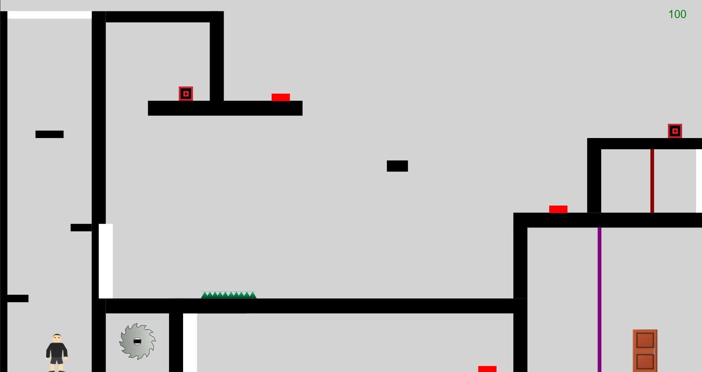

Portal 2
IUT de Lens, Mars 2020 - Juin 2020
Projet de Semestre 2
Lors du second semestre, nous avons comme objectif principal la réalisation d’un jeu en 2D inspiré de Portal par groupe de trois étudiants.
Le but de notre jeu était de résoudre des énigmes afin d'avancer vers un certain point pour accéder aux différentes salles.
Pour réussir il fallait passer des obstacles en sautant, en esquivant des pièges (roue de scie, pique en fer, laser) et réfléchir à la position des différents cubes à poser sur les boutons pour l’ouverture de certaines portes.
Pour la création nous avons utilisé ici le langage Java ainsi que le framework JavaFX.
